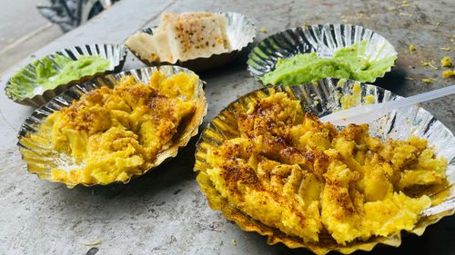
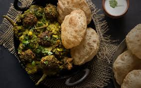
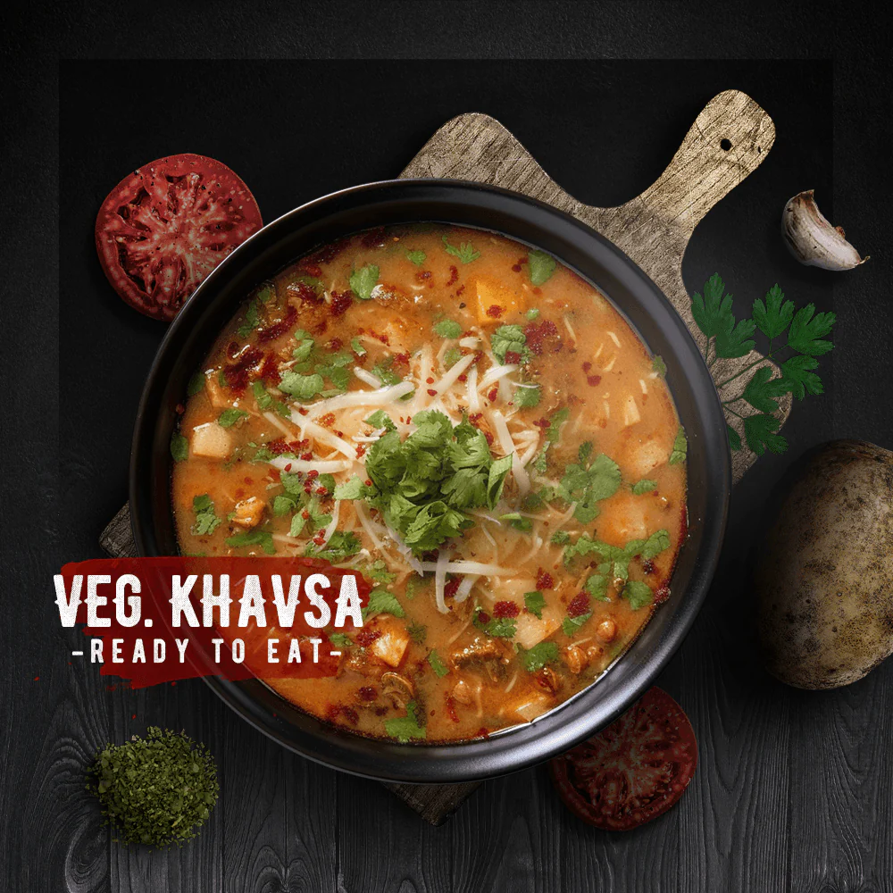
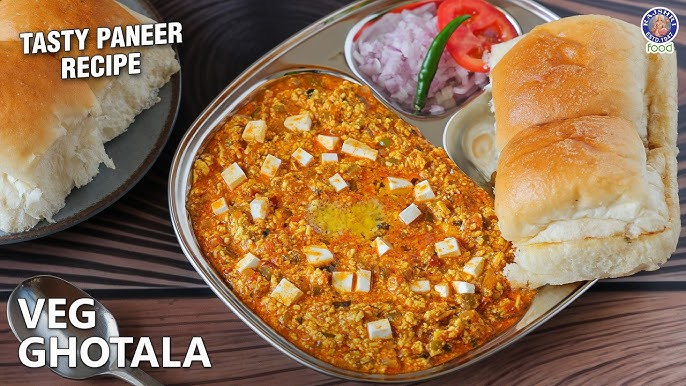
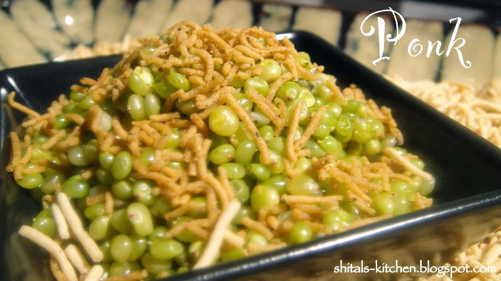
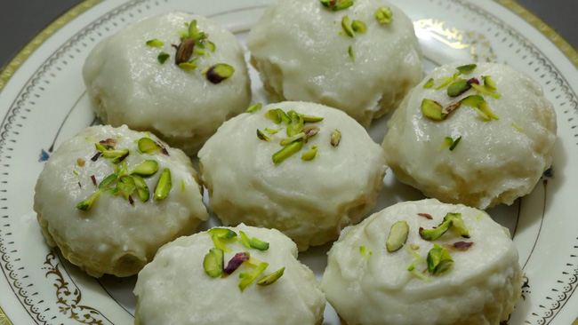
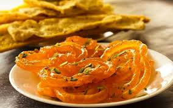
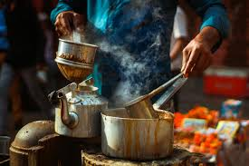
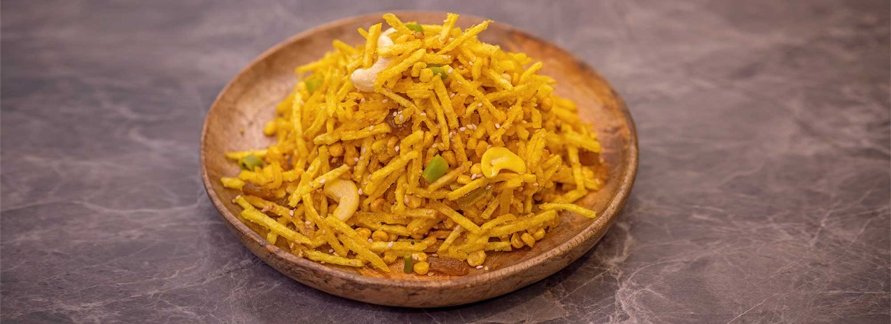

A spicy, steamed snack unique to the city's streets.

A rich, mixed vegetable dish cooked in clay pots.
A wholesome platter representing Gujarati hospitality.
The ultimate colorful street dessert of Surat.

Surti Khavsa is a creamy Burmese-style noodle soup with coconut curry, crunchy toppings, and spicy chutney.
Soft, fluffy, and perfectly fermented Surti Khaman — a staple Gujarati snack.

A rich, buttery, and cheesy street food made with paneer and spices.
Crispy, savory snacks that perfectly complement tea-time.

Surat's rare winter superfood — fresh green sorghum roasted to perfection.

A rich, ghee-laden festive sweet — Surat's Chandi Padvo specialty.

The iconic Gujarati breakfast combo — crispy fafda with syrupy jalebi.

Strong, cardamom-spiced tea — the heartbeat of Surat's street culture.

Fresh green savory mix — a unique Surati monsoon season treat.
Spicy dried peas curry topped with crunchy sev & tangy chutneys.